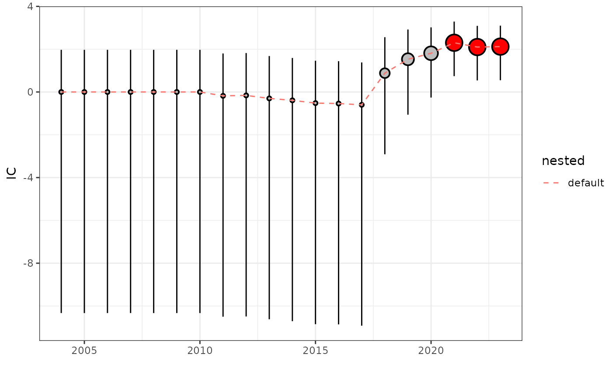

Plot Disproportionality Trend
Source:R/disproportionality_analysis.R
plot_disproportionality_trend.RdThis function plots the disproportionality trend over time for a given metric.
Visualizes the results ofdisproportionality_trend().
Usage
plot_disproportionality_trend(
disproportionality_trend_results,
metric = "IC",
time_granularity = "year"
)Arguments
- disproportionality_trend_results
Data frame containing the results from the
disproportionality_trendfunction.- metric
Character string specifying the metric to plot. Options are "IC" (information component) or "ROR" (reporting odds ratio). Defaults to "IC".
- time_granularity
Character string specifying the time frame. It is recommeded to use the same specified in the 'disproportionality_trend' function. Default is "year". Alternatives are "quarter" and "month".
Details
The function creates a plot to visualize the disproportionality trend of a drug-event combination over time. Depending on the selected metric, it plots either the information component (IC) or the reporting odds ratio (ROR) with corresponding confidence intervals.
See also
Other visualization functions:
render_forest()
Examples
drug_selected <- "paracetamol"
reac_selected <- "overdose"
trend_results <- disproportionality_trend(drug_selected, reac_selected,
temp_drug = sample_Drug,
temp_reac = sample_Reac,
temp_demo = sample_Demo,
temp_demo_supp = sample_Demo_supp[
, .(primaryid, quarter)
]
)
plot_disproportionality_trend(trend_results, metric = "IC")
